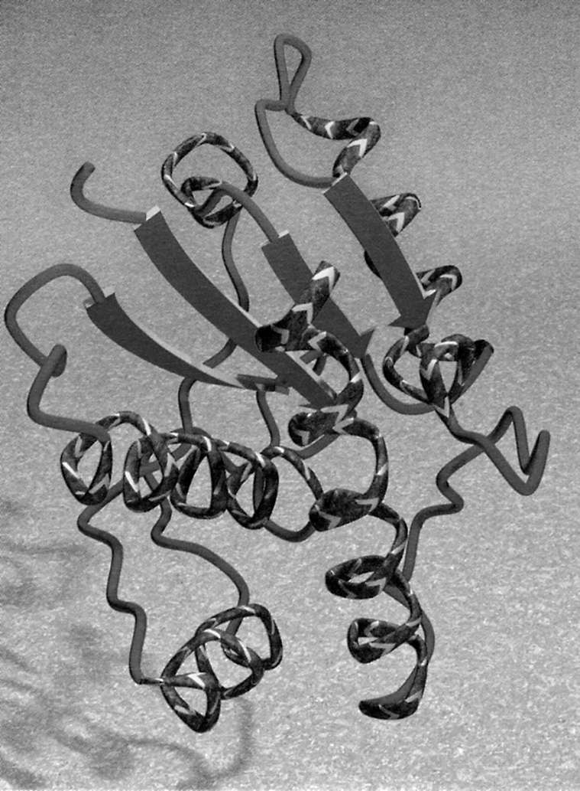
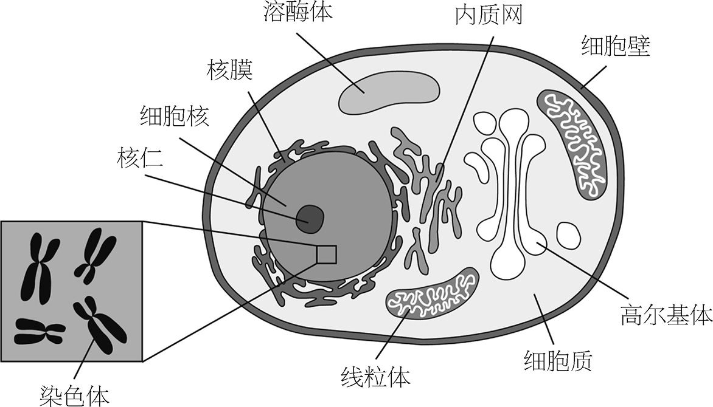

科学家与诗人达成一致令人略感欣慰。1949年，英国生物学家J. B. S.霍尔丹因“什么是生命”这个问题陷入了深深的思考。在文章开头处，他这样坦陈：
我并不打算回答这个问题。其实，我甚至怀疑究竟有没有可能对这个问题给出个完满的回答。因为我们都知道活着的感觉是什么，就像我们能感觉到红色、疼痛和力气。我们却无法用别的什么词语描述它们。
艾米莉·狄金森说得更加简练：
自然真意人皆悟，道常无名未可言。
而霍尔丹则继续探索道：
生命是种化学过程的模式。这种模式有特殊的性质。它和火焰燃烧的模式相似，但又比火焰多了自我调节的功能……因此，当我们说生命是一种化学过程的模式时，我们说出的内容确切而且重要……但若要全然照此解释生命，则无异于把生命还原成机械作用，我相信这是不可能的。
生命是否只是些相互作用的分子，极其繁复却也能从原理上阐释？抑或生命还涉及更多的东西？我们还不知道。科学家采用自底向上的方法来研究，他们做出尽可能少的假设，只提出能够加以检验的学说。这种方法会不会最终触及一个极限，那之后科学再也无力延伸，这我们说不清。不过，现今这样的终点还没有明显出现。生命——我们可以宽泛地将其定义为能够繁殖、能够对外部条件做出反应并从环境中获取养分的有机体——确实有可能仅仅只是分子及分子间的关系而已。而且，这种可能性确实极大。不过这并不令人失望，反而是非同凡响的。分子们串通一气竟然能创造出《李尔王》，正是这种无限的可能造就了这个神奇的世界。
可是，我也认为人类的思想（更不用说思想所创造的奇迹）永远不可能仅用分子的理论来解读 ，就像我们也不可能用字母表来解读李尔王 。大多数科学家也都相信如此。现象是分层级的，我们不可能只考虑发生在第一梯级上的事情，然后就理解所有梯级上的事情。无论我对晶体管工作原理了解得多么透彻，我都不可能从中推断出为什么电脑会死机。如果我播下种子没有发芽，那最好应该考虑土壤中养料、湿度和温度的问题，而不该对种子进行基因分析。从事科研的很多技能都有赖于弄清你在研究哪一个层级，进一步讲就是要明白什么与研究相关，什么无关。
在我们探索生命世界的分子之前把这些说清楚很有必要，因为生物学的分子观点常常被贴上还原论的标签，即试图在基因的分子层面上解释生命的方方面面。有时候，分子观点确实是推进研究的最佳方法，因为分子毕竟是生命基础的最小功能单元。但如果我们像多数科学家一样能够同意，在阶梯上降到微观世界层级就必须抛弃其他范围的关于生命的问题和答案（比如：意识是什么？），这样的下降就不会引起明显的异议了。
实际上，通过分子观点这条途径，我们还能更清楚地认识我们自身的自然基础。分子生物学帮助人们填补上了查尔斯·达尔文进化论的主要鸿沟，即自然选择的机制 问题。分子生物学至少让我们略知一二，生命如何出现在这遍布气体、岩石和水的星球上。它拯救了生命，缓解了痛苦。它帮助我们理解，为什么药物并非总是如愿发挥效用，为什么抗生素的滥用会培养出超级病菌，艾滋病毒怎样为非作歹。对生命分子的研究成为20世纪后半叶的主流科学，而且看起来还将在我们未来的生活中发挥更显要的作用。这个科学领域中的知识可能将会越来越普及，而不再是奢侈品。
人们一度认为，有机化学和别的化学不一样。19世纪早期，不少科学家相信有机物质是生命有机体中生命活力发生作用的产物，化学家是不可能在实验室中仿制的。但到了1818年，颇有名望的瑞典化学家约恩斯·雅各布·贝采里乌斯从生命活力的思想中隐约看到了某种循环证明，阻挡了人们进一步发展的希望：
从我们的观点来看，动物体内多数现象的原因都隐藏得很深，永远无法找到。我们将这些潜藏的原因称作生命活力 。和很多其他的概念一样，前人欺骗性地导向这样的论点只是徒劳，而我们为自己则创造出这个词语 ，不能附加新的观念。
紧接着，贝采里乌斯又提示我们怎样更上一层楼：
这种生命的力量 ，不是我们身体的组成部分，也不是身体的某种机能，也不是一种简单的力量。实际上，它是身体机能与原料之间相互作用的结果……
这正是关键。理解生命的分子基础，与其说是要去搞懂生命分子都是些什么，不如说是要理解生命分子相互间做些什么。生命的分子本性并不是一场陈列，而是一支舞蹈。在后面的章节中，我会叙述其中的一些舞步。而在这里，我想简要地介绍部分角色。
在霍尔丹的时代，人们常将生命看作一系列化学变化，就像是把实验室里的玻璃仪器连成巨大的网络。科学家们相信，一切的关键就在于代谢作用，即我们如何从食物中获取能量。但是，光把细胞的组分分子提纯扔到锅里可造不出有机体来。现代的分子生物学则关注时间与空间下的组织 。生命分子在细胞各个隔间中是如何排布的？它们怎样在周围移动？它们怎样相互沟通来统一步调？我们现在之所以能够提出这些问题，正是因为我们已经可以在分子层面上来研究细胞，对工作的分子进行测量和拍照。于是，细胞成为了一个社群。
不过这个社群可是相当复杂的。分子生物学的困难之处与理论物理学并不相同。它的概念并不陌生、抽象，或者在数学上很艰深。分子生物学之所以困难，是因为同时发生的事情太多。当我们的分子机器运转错误时，我们会有惊吓甚至休克的反应，但更惊人的是它竟然还是完全可以运转。分子机器经常如此，它设计的目标就是要十分牢靠，以面对这个世界的变迁。分子机器里有检查点，有安全机制，有备用预案，还有细致的记录存档。没有任何人造机器能达到细胞这般缜密的组织程度。
我们应当记住，细胞是个自动机器的社群。社群的各个成员没有意志，没有远见，没有记忆，没有利他之心（严格地讲也没有利己之意）。可是它们常常优美地共同协作，导致我们很容易忘记上面这一点。另一方面来看，细胞也会捉摸不定，因为我们对它们怎样工作了解得太少了。当我们预期它们死亡时，它们却可能存活下去；当我们给它们提供试验的药物时，它们可能发生出乎意料的反应。
分子生物学在细胞层面发挥效用，而很少谈论整个生物体。细胞可谓是“生命的原子”——你无法找到更小的存活单元。（病毒是一种具有争议的例外情形，它们只不过是基因穿上了外套，但除非去感染细胞并攻击其组织，否则病毒是无法繁殖的。）但这也并不见得说明这种视角很受局限，因为我们可以根据单个细胞的内部活动，来理解相当多的我们人类的需要。人体细胞需要氧气和糖类来制造新分子并且自我复制，所以我们需要呼吸和进食。神经刺激起始于细胞的层面。人体各种组织——皮肤、毛发、骨骼、肌肉——都是细胞里的分子一个个堆积起来的。我们排泄是为了将细胞中的垃圾清走。发抖、出汗都是我们为了稳定细胞温度的措施。换言之，很多关于人体功能的问题都可以在分子生物学的层级上得到回答。当然了，也有很多不能这样解答的问题，它们多是最有意思的生物学问题。
霍尔丹将生命是“蛋白质的存在方式”这一命题的提出归于恩格斯。（霍尔丹是一位社会主义者，并非为了生物学而阅读恩格斯的著作。）这种活力论观点隐含了蛋白质内在具有生命之意，但霍尔丹抨击了这种想法。不过霍尔丹并不反对的观点是，蛋白质 乃是生命的材料。
蛋白质在生命细胞中处处皆是。很多蛋白质是酶，即催化化学变化过程的分子。酶能够以数百万倍的系数加速化学反应，确保体内的化学反应不致慢得难以想象。酶是在研究发酵的过程中被发现的，酶的英文enzyme正是希腊语“在酵母里”的意思。19世纪晚期，人们发现从酵母细胞中可以获取酶并提纯，虽然酶已经不再是生命系统中的一部分，但它还是可以继续进行发酵。这项发现帮助人们认识到，生命中的化学同样也遵循与非生命物质相同的原理。
如果细胞是座城市，酶就是其中的工人。为了维持城市运转，原始材料输入细胞并转化为有用的东西。酶就是工厂里的工人，推动这项工作完成。而这个产业里令人好奇的一点是，它还包括负责制造工人本身的工厂——酶自身也是在生产线上组装起来的。
不是所有的蛋白质都是酶。有的蛋白质发挥着结构方面的作用，成为身体的各种组织。有的作为细胞的警卫力量。有的在蛋白质的运输轨道上负责来回递送包裹。有的负责操作细胞的大门，坐在细胞外膜上，遵照接收到的指示开门关门。在人体细胞中有约六万种不同的蛋白质分子，每种都负责一项高度专门化的任务。
如果只是瞧一眼蛋白质，几乎不可能猜出它负责的任务是什么。从外观上来看，蛋白质没什么特殊之处，大多呈球形（参见第23页图8），主要由碳、氢、氧、氮和少量的硫组成。负责同一项任务的蛋白质具有相同的形状和结构，那些看似不规则的一团团实际上是精心设计并装配好的。
很多酶的形状像凹凸不平的腰果，在内侧的曲线处有裂缝。这个裂缝就是要执行任务，即分子实施催化的位置。有些蛋白质会成组地完成工作，它们变成了多蛋白集合体中的“子单元”。细菌体内的色氨酸合成酶就是如此，由四个可分离的子单元结合而成。这种酶能够合成色氨酸这种小分子。所有生物体都需要色氨酸，但人体不含这种酶，所以就不得不通过吃掉其他已经造出色氨酸的生物来摄取它。
这个例子展示了，酶及其他蛋白质的名字常常能透露它们的功能。乙醇脱氢酶是能从乙醇分子上取下一个氢原子（“脱氢”）的酶。ATP（三磷酸腺苷）合成酶能合成ATP分子。但并非所有蛋白质的名字都如此一目了然。血红蛋白（haemoglobin）负责在血流中携带氧，它的名字则分为两段，前段来自希腊语的血液（haeme ），后段来自它的形状是球形（globular）。肌红蛋白（myoglobin）在肌肉组织中负责从血红蛋白手中接过货物——氧，它名字的前一段来自肌肉的希腊语。还有更诡异的名字。弹性蛋白是一种有弹力的蛋白，能在很多柔韧的人体组织，如血管和声带中找到。泛素是人体中到处都能找到的一种蛋白质，因为它在随处可见的废弃蛋白质处置过程中发挥核心作用。
从图8中你大概猜不到，其实蛋白质分子只不过是小分子串起来的一条单链。这条链将自己密集地折叠、盘绕起来，看上去就像是堆起来的一大团原子。但通过X射线晶体学（参见第18页）细致观察其结构，我们就能沿着这条链看到它怎样扭曲，把自己挤成一个紧缩的球体。蛋白质化学家有时会用一种别样的方式将这条分子链形状清晰地表现出来（如图11）。从这幅图上，你能够看出，整体的结构是通过某些特定的重复特征——或称“模体”——搭建起来的，比如其中会出现盘旋状的单元，称作α螺旋；还会出现几段相互平行的分子链，即所谓的β折叠。

我们还可以从概念上进一步分解蛋白质的结构。分子链是由一个个有特点的小分子团组成的，就像是穿在一条线上的珠子。这些分子团曾经是一个个分立的分子，称作氨基酸 。天然蛋白质含有20种氨基酸。在分子链上，氨基酸与氨基酸通过一种叫肽键 的共价键连接在一起。为了形成这个连接，两个分子都丢掉了一部分多余的原子，而余下的部分——链上的枝节——称作残基 。这条分子链就称作多肽 。
氨基酸残基组成的任何一条链都是多肽。只要对氨基酸混合物加热，我们自己也能够简单地造出多肽。但是光这样造不出蛋白质。蛋白质中，氨基酸在链上的排列顺序——序列 ——并不是随心所欲的。序列是经过选择的（在达尔文的意义上说，就是自然选择），从而保证肽链上的每一部分都处在正确的位置，长链能够在水中收缩卷曲成预定的球状。蛋白质的特殊形状在加热时会被破坏，这个过程称作变性。但很多蛋白质在冷却之后，又会自发地折叠恢复到原先的球状结构。换言之，肽链对它的折叠形状有记忆。
人们对折叠过程 的细节还未全然知晓——实际上，这也正是分子生物学的一个核心未知难题。不过，我们倒是知道，是什么能够保持蛋白质分子中多肽链的这种紧缩形式。分子链中很多部分可以相互形成微弱的键，称为氢键 。比如，正是氢键将肽链粘出了α螺旋和β折叠。链上还有一些部分是通过硫原子间的强键结合起来的，这些硫原子来自半胱氨酸的残基。有些残基较难溶于水，于是就倾向于在球状蛋白质的内部结成一团，被链上可溶于水的部分包围起来。因此，由此产生的折叠结构依赖于不同残基的特点，依赖于不同残基在链上的位置——换句话说，即依赖于序列顺序。可以说，蛋白质分子造出来时就带有了它们各自折叠方式的指令。
制造蛋白质时，细胞中的工厂是怎样“知道”该如何排列氨基酸次序的呢？此时DNA（脱氧核糖核酸）就走进了我们的视线。所有细胞中都有DNA分子，体内各种蛋白质的序列就由DNA编码。蛋白质在做所有的工作（或者说大部分工作），而DNA则只是消极被动地等着被解读，一旦需要某种蛋白质的时候就要用到它们了。
DNA信息是用与蛋白质信息不同的另一种语言所书写的，但细胞能够互译这两种语言。DNA是另一种由小的分子单元组成的序列——另一种聚合物 。但它的组成单元与蛋白质完全不同——并非氨基酸，而是称作核苷酸 。DNA像一座记录着蛋白质结构的图书馆，由表示核苷酸序列 的字符书写而成（参见第135页）。粗略地讲，制造蛋白质的信息就编码在DNA的草图里，我们称之为基因 。
显然这里会牵涉到奇妙的协作。无论是哪里需要酶来完成一项工作，这个信息都必须传递到DNA所处的区域。在人体细胞中及所有生物体的细胞中——除了最“原始”的单细胞的细菌以外，DNA所处的核心隔间称为细胞核 ，细胞核通过自己的膜与外界隔离开来（如图12）。凡有细胞核的生物就称作真核生物 。

在人体细胞中，DNA打包成一捆一捆的，称为染色体 。制造蛋白质时，包含着相应基因的DNA就会展开以供阅读。实际上，蛋白质制造并不在细胞核中进行，而是在名为内质网的隔间里，这是个由膜通道所组成的错综复杂的网络。基因首先转录 成一种与DNA相关的分子，名叫RNA（核糖核酸）。RNA分子从细胞核转移到内质网中，在这里翻译 为蛋白质。继而蛋白质被输送到需要的地方。因此，细胞里的分子必须具有通信和运输的能力。
这整个过程是受到调节的，保证蛋白质不会随随便便就造出来，只在需要时才制造。如果细胞总是任意地制造各种蛋白质，那它很快就会拥堵了。法国生物化学家弗朗索瓦·雅各布和雅克·莫诺在1960年代提出了一项重大发现，解释细胞怎样维持各个隔间之间的秩序。他们表明基因之间能相互调节，可以通过自身编码的蛋白质为媒介来开关其他基因。例如，有些编码了细胞所使用的蛋白质的基因（称为结构基因 ），同时也伴随存在着编码了抑制蛋白质的调节基因 。调节基因打开时，抑制蛋白就合成出来，绑定到结构基因上，阻止结构基因的“表达”（转录并翻译成蛋白质）。雅各布和莫诺将这些受调控的扩展DNA称为操纵子 。他们从一个角度展示了细胞中不同基因和蛋白质拥有相互作用的网络。分子生物学家如今几乎解码了人类DNA的全部核苷酸序列，但是对于它所编织的这个巨大网络，人们才读懂了很少一部分。
关于基因的分子科学可谓打开了潘多拉之盒。它不仅帮助我们解释了关于生命的最深层的谜题，还在人类行为以及伦理学上提出了挑战性的难题，并为我们带来了具有争议的新技术。它还颠覆了我们对进化的理解，颠覆了对于我们从何处来这个问题的认识。
基因是遗传特征的流动，它来自我们父母的馈赠，谁都无法避免。个人特征会从父母遗传到子女身上，这一思想非常古老而明显，而19世纪的奥地利神父兼生物学家格雷戈尔·约翰·孟德尔则将它表述得更加具体。基于豌豆杂交实验，他提出存在着调节遗传特征的“颗粒状因子”，这些因子能够从先祖的细胞传递到后代。很快人们就明白了，这种后来被称作基因的“因子”，在本质上就是一种分子。但在20世纪前半叶，很多科学家认为它是蛋白质分子。我们已经看到，霍尔丹也相信这种说法。直到1953年，弗朗西斯·克里克和詹姆斯·沃森推断出了DNA的结构，人们才相信DNA而非蛋白质是遗传的分子物质，是基因的材料。
如此一来，进化论就有了坚实的分子基础——受精卵从父母身上获取的并不是一个预定形的身体，而是一套规划着身体如何发育的基因指令。由于基因的分子构成在一代代变化，进化中的变迁也就慢慢发生。当细胞分裂时，DNA会复制一份，但这并不能总是完美地实现。于是，孩子从父母身上得到的DNA就可能会是带有一点瑕疵的双方基因融合体。这些瑕疵通常不会有什么影响。有时它们会有害（但要注意，大多数遗传疾病是由孩子继承 了缺陷基因造成的，而不是由于基因复制的随机差错而获得的）。极稀少的情况下，基因突变可能会产生有益的影响，使生物体更适于生存。这种优势可能极其微弱，但微弱的优势也能在繁殖中获得较大的成功比率，从而缓慢提高突变基因在群体中的数量，进化就这样微小地一步一步前进。
这就意味着，基因乃是进化的分子记录。人类和兔子共同的祖先拥有着相同的一套基因。而现今人类与兔子全部基因（即基因组 ）的差异正反映了基因突变逐渐积累形成的分化。这使得科学家能够从基因的分子结构中重建进化史——推断出物种分化的次序。过去古生物学家必须依据生物的身体和骨骼的形状来推断，现在则有了衡量进化中的变迁更轻松、更易量化的分子手段。
具体而言，通过比较线粒体（如图12）这一细胞隔间中的DNA，人们就可以重建进化树，或者称种系发生学 。线粒体是细胞的锅炉房，能量就在这里产生（参见第四章）。与细胞核中DNA不同的是，线粒体DNA是直接从母体获得的。细胞核DNA会融合来自父母双方的基因，从而发生改变，线粒体DNA的变化则只来自一代代逐渐突变的积累，因而也更好地记录了进化中的变迁。1987年，加州大学伯克利分校的艾伦·威尔逊和他的同事一道，比较了来自许多种族群体的人类线粒体DNA。得出平均突变率后，他们推测出所有样本（也就可以推广为所有人类的线粒体DNA）都派生于同一个版本——20万年前一个非洲女人的细胞，她就是我们所有人的共同祖先。分子中所包含的历史记录如此丰富，任何陶罐碎片或古代墓葬中所含的信息都无法与之相较。
所有的生命有机体——从最卑微的细菌到最尊贵的国王和王后，都将遗传材料包装在DNA中，并通过蛋白质来发挥作用。这也就暗示着所有的生命有一个共同的起源。 注 最原始的单细胞生物必然包含着蛋白质和DNA，正与现今“简单的”细菌相仿。
但是在那之前是什么呢？DNA编码蛋白质，蛋白质帮助DNA运转并复制，即便在细菌的体内，分子间共生关系也如此纷繁奇妙。无论是DNA还是蛋白质，结构都太过复杂，太难随机组装，在早期地球的海洋和湖泊里不太可能从零星分布的有机分子碎片自发形成。要理解38亿年的进化史里最早期的细菌或藻类怎样演变成今天的生物体，这尚属简单（至少在原理上）；而要理解大约短短几十万年时间里地球怎样从不毛之地演变成生命的摇篮，这可就难得多了。
化学家们设想了很多种原创性的方案来解释，他们认为甲烷、二氧化碳、氨、水及氮气等地球早期无机组分可能转化成了制造生命所需的氨基酸和糖。不过这些方案都是探索性的，没有哪一种理论能在生命的化学起源问题上占据优势。然而，岩石、气体和水怎样转化成生物分子原型在概念上也还不算最难，更难的是，这些组成单元是怎样演变成填满了DNA和蛋白质并且运转起来的细胞。这是一个鸡和蛋的问题：若不是两者共存，单有蛋白质或者单有DNA都全无用处。
解决这个谜团的一个好办法是，转而关注两者之间的不起眼的RNA。RNA负责将遗传信息携带到合成蛋白质的地方去。与DNA相比，RNA是个多面手。在1980年代，人们发现RNA可以在自身的重排过程中充当催化剂。人类基因里面有很多“废话”，在清楚地阅读之前需要先切掉它们（参见第140页）。这些“废话”会被复制到RNA上，但在RNA翻译为蛋白质前会被剪掉。这项编辑工作多由酶来完成，但也有RNA分子能够独立完成。这些RNA称为核酶 ，显示它们具有酶的倾向。
在1990年代，生物化学家大大扩展了对RNA能力的认知。他们使用了操纵和改写DNA的生物技术，合成出各种各样的RNA分子，能用来引导各种各样的化学过程，比如将核苷酸连接起来，或者在碳原子间成键。这些研究揭示了，原则上RNA相当万能，足以引发生命起源所必要的化学反应。简言之，RNA既可以是基因携带者，也可以是工人。
因此，不少研究生命起源的科学家提出假说，认为在蛋白质与DNA交互作用诞生之前，存在一段称为RNA世界 的时期。在与原始地球相仿的条件下，要制造RNA分子同样困难得可怕。不过RNA世界已经打破了蛋白质与DNA相互依存的困境，也概念化地连接起小有机分子的形成和首个原始细胞的出现。
如果我们最终理解了生命的起源——不一定了解事实上怎样起源，但至少知道可能 怎样起源——那我们是否能在实验室中重现呢？我们能否从零开始制造生命呢？
对于生命的分子基础，人们已经了解得相当多，研究者完全能够猜测出要怎样建造出人工细胞。这听上去似乎是个有点吓人的前景。如果我们恰好造出一个细胞，它在自我复制方面比“天然”细胞远为出色，那该怎么办？它们会不会像外星人入侵一样殖民我们的星球？
这并不是科幻小说。实际上我认为，无论是好是坏，首例合成细胞会在21世纪内制造出来。如今合成DNA、改写基因已经是非常常规的工作了，很多化学家正致力于从头制造人工设计的蛋白质。生物化学家杰克·绍斯塔克、戴维·巴特尔和皮尔·路易吉·路易西曾经提出：
定向进化和膜生物物理学的进步，使合成简单的生命细胞即便不是可预见到的事实，也已经是个可以想象的目标了。
他们提议，可以通过特制的核酶来构建“极小细胞”。已有学者报告，初步制出了能够组装RNA的核酶（因此RNA也就有潜力自我复制）。人们可以把这样的RNA像普通细胞一样包裹在人工的膜中，但这种膜还需要具备能够增长和分裂的能力，而路易西恰恰造出了这种“可复制膜”。这种能够自我复制的“原细胞”可能会演化出能够把氨基酸组装成蛋白质的RNA分子。研究者称这就使得我们能够“重放早期演化的录像”。
有人预感到这种实验会被用于邪恶的目的。他们应该记住的是，致命的化学和生化武器已经比较容易制得，相比之下用这种手段来开发致命武器要困难得多，选择它很荒唐。不过我们也不可能知道这样的研究会走向何处。这正是分子科学的现实：它是个创造性的学科，最后总能够给予我们努力得到的实物成果。这一路上充满了艺术，充满了奇观，充满了危险，而最终得到的只是我们应得的分子。